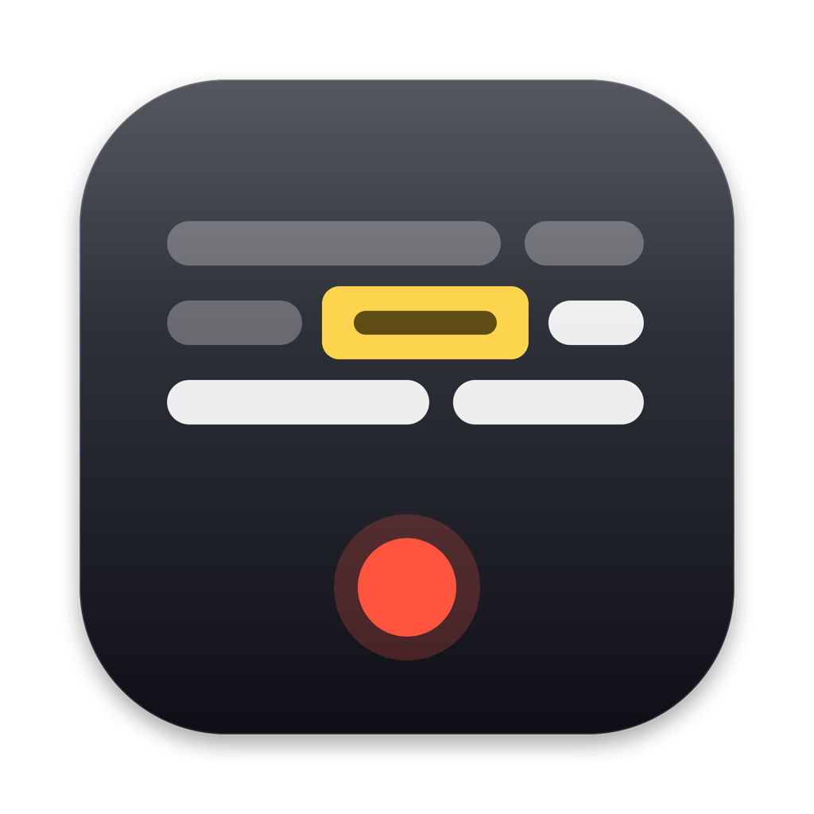

Gratis · macOS 27 · Apple siliconLee. Graba. Toma hace el resto.
Un teleprompter y grabadora de voz para Mac que sigue tu voz mientras lees y deja el audio listo para editar.
El texto avanza contigo.
Tú lees. Toma marca por dónde vas. No hay una velocidad que ajustar.
Sin velocidad que ajustar
Lees a tu ritmo y la palabra amarilla te acompaña. Si vas rápido, va rápido. Si vas lento, va lento.
- El reconocimiento corre dentro de tu Mac. Tu voz no sale de la computadora.
- No necesita internet. Funciona igual en un avión.
- Un solo botón: Grabar, o la barra espaciadora.
Lee todo de corrido.
Si te equivocas, repite la frase y sigue. No hace falta parar ni empezar de nuevo.
Te equivocas, repites, sigues
Lees el video entero en una sola toma. Si una frase sale mal, la dices otra vez y continúas. Toma se queda con lo que dijiste bien.
- Un video, una grabación. Sin cortes a mano mientras hablas.
- Los errores no estorban. La frase repetida se limpia en el pulido.
Tu voz, lista para publicar.
Al terminar la toma, Toma limpia el audio solo. Mira el antes y el después mientras bajas.
Recorta los silencios
Quita el silencio del inicio y del final y acorta las pausas largas.
Quita muletillas
Fuera los «eh» y «mm», y las frases que repetiste.
Aísla tu voz
Usa el aislamiento de voz de Apple, el de FaceTime, y baja el ruido de fondo.
Ajusta el volumen
Lo deja listo para redes sociales.
Dibujo ilustrativo del proceso, no es una grabación real.
Recorta silencios
Quita el silencio del inicio y del final y acorta las pausas largas.
Quita muletillas
Borra los sonidos como «eh» y «mm» y las frases que repetiste.
Aísla tu voz
Usa el aislamiento de voz de Apple, el mismo de FaceTime, y quita el ruido de fondo.
Volumen listo para redes
Elige el destino y Toma deja el audio al nivel justo.
El original siempre se queda
El pulido nunca toca tu grabación. Si no te gusta el resultado, tu toma original sigue ahí, intacta.
Es lo que bajó el ruido de fondo en las pruebas hechas en un Mac.
Lo que tarda el pulido. Una toma de un minuto se pule en menos de un segundo.
Sales con todo para editar.
Cada toma guarda cuándo dijiste cada palabra y cuál toma es la buena.
El tiempo de cada palabra
Sirve para hacer subtítulos sin transcribir nada a mano. Los tiempos de abajo son un ejemplo.
00:00,40 Hace 00:00,71 un 00:00,88 año 00:01,24 empecé 00:01,69 a 00:01,80 grabar …
Cuál toma es la buena
Si grabaste el mismo video varias veces, queda una lista que dice cuál usar.
- El avión · toma 1
- El avión · toma 2La buena
- El avión · toma 3
Todo en una carpeta
Cada guion tiene su carpeta con las tomas, el guion y la lista de tomas.
~/Películas/Toma/Voz cierres/ tomas/ las grabaciones manifiesto.json tiempos y toma buena guion.md tu guion
Todo se queda en tu Mac.
Tu voz y tus guiones son tuyos. Toma no tiene dónde mandarlos.
Sin cuentas
No te registras, no inicias sesión. La abres y la usas.
Sin nube
Las grabaciones y los guiones viven en tu disco. Nada se sube a ningún servidor.
Sin analítica
Toma no mide lo que haces ni manda datos de uso a nadie.
Esta página solo le pregunta a GitHub cuál es la versión más nueva.
Instálala en cuatro pasos.
Toma todavía no está notarizada por Apple. Por eso macOS te pedirá un permiso extra la primera vez.
- Descarga y arrastraDescarga el zip y ábrelo con doble clic. Arrastra Toma a la carpeta Aplicaciones.Descargar Toma.zip
- Ábrela desde AplicacionesmacOS dirá que no puede verificar al desarrollador. Es normal: todavía no está notarizada. Cierra ese aviso.
- Dale permiso una vezAbre Ajustes del Sistema y busca el aviso de Toma:Ajustes del Sistema›Privacidad y seguridad›Abrir igualmente
- Permite el micrófonoCuando Toma lo pida, permite el micrófono y el reconocimiento de voz. Sin eso no puede oírte ni seguir tu voz.
Lo que suelen preguntar.
¿Cuesta dinero?
No. Toma es gratis.
¿Necesita internet?
No. El reconocimiento de voz y el pulido corren dentro de tu Mac. Solo necesitas internet para descargarla.
¿Dónde quedan mis grabaciones?
En la carpeta Películas › Toma, dentro de una carpeta con el nombre de tu guion.
¿Cómo la actualizo?
Descárgala otra vez desde esta página. Aquí siempre está la versión más nueva. Arrastra la nueva a Aplicaciones y reemplaza la anterior.